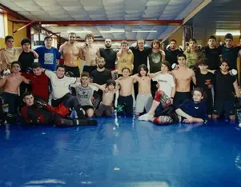
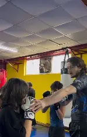

GOA Martial Arts-არის საბრძოლო ხელოვნების და ბრძოლითი სპორტის სკოლა
ადამიანები სწავლობენ Mixed Martial Arts (MMA) და ზოგჯერ სხვა საბრძოლო დისციპლინებსაც. მათი ფილოსოფია ეყრდნობა მიზანდასახული სწავლისა და პროგრესის განვითარებას — სხეული და გონება ერთდროულად ირთვება, მიზნების დასახვასა და შესრულებაზეა აქცენტი გაკეთებული.
საბრძოლო ხელოვნება მნიშვნელოვანია არა მხოლოდ ბრძოლისთვის, არამედ ფიზიკური, მენტალური და პიროვნული განვითარებისათვისაც.
საბრძოლო ხელოვნება ავითარებს:
ძალას
გამძლეობას
სისწრაფეს
კოორდინაციას
მოქნილობას
ვარჯიში აძლიერებს გულ-სისხლძარღვთა სისტემას და მთლიან სხეულს.
striking-ნიშნავს დარტყმებით ბრძოლას — ანუ ტექნიკებს, სადაც მოწინააღმდეგეზე ზემოქმედება ხდება ხელის, ფეხის, მუხლის ან იდაყვის დარტყმებით.
grapling-საბრძოლო სპორტში ნიშნავს ჭიდაობასა და ჩაჭიდებაზე დაფუძნებულ ბრძოლას, სადაც მთავარი მიზანია მოწინააღმდეგის კონტროლი, წაქცევა ან დამორჩილება — დარტყმების გარეშე.

სავარჯიშო დარბაზი

ვარჯიში
GOA-ს ლოგო